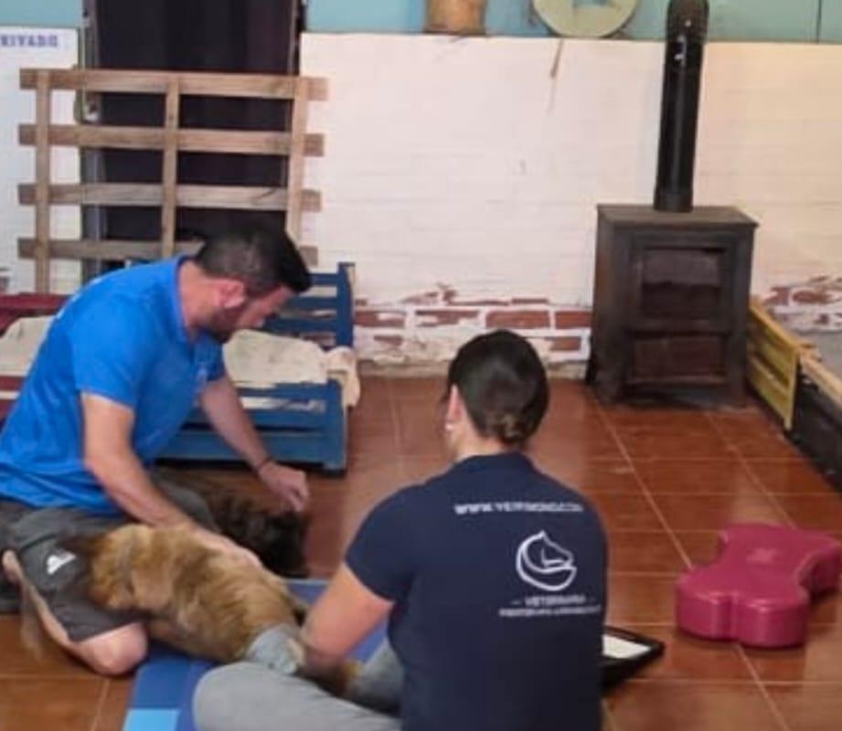
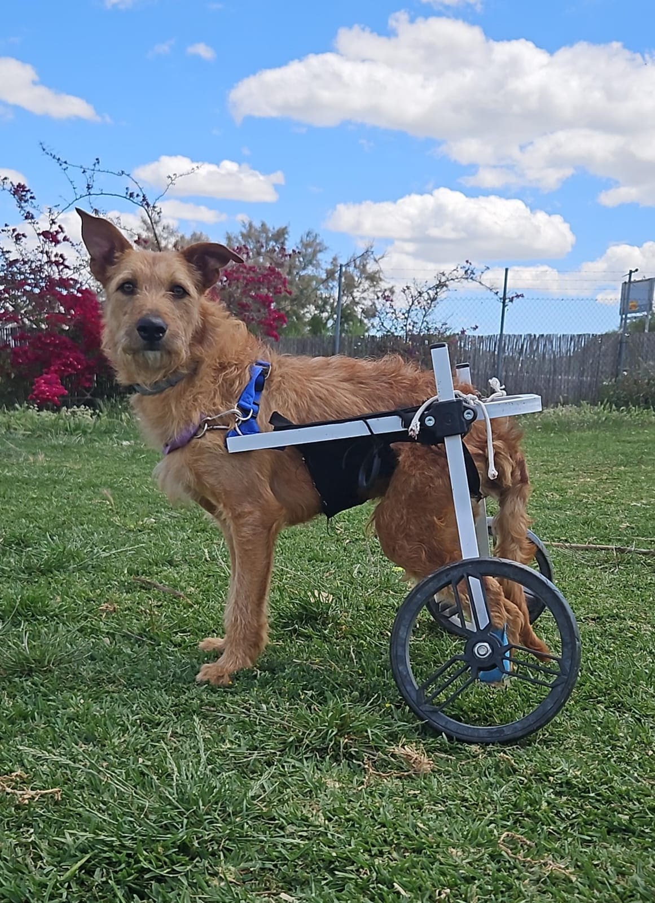
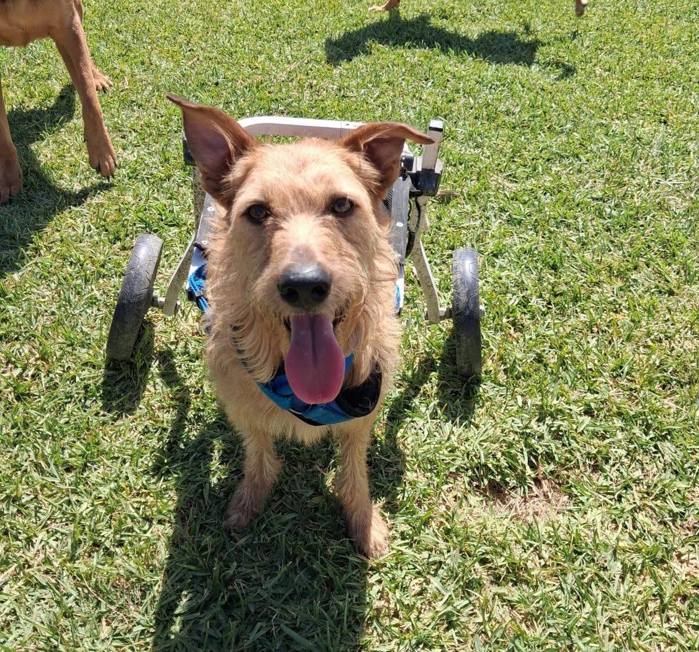

Rescate y atención veterinaria
Tras conocer su situación, el equipo lo rescató y buscó atención veterinaria urgente.
Rescates, cuidados y nuevas oportunidades
Cada rescate es un camino compartido. Estas historias cuentan la fuerza de los animales y el apoyo de quienes les ayudan.
Una historia digna de ser conocida
Cuando Vida era cachorro, no podía mover las patas traseras y se arrastraba. Había recibido un disparo de balín en la espalda. La rescatamos y la llevamos urgentemente al veterinario para valorar la lesión.
Gracias a los donativos de muchas personas, Vida pudo ser operado. No tenía una lesión medular, pero las secuelas del hematoma que se produjo tras el impacto hicieron necesaria una rehabilitación especializada para ayudarle a recuperar movilidad y avanzar hacia una vida plena.



Tras conocer su situación, el equipo lo rescató y buscó atención veterinaria urgente.
La ayuda de personas solidarias permitió que Vida recibiera la operación que necesitaba.
La historia publicada por la asociación relata que, durante nueve meses, una fisioterapeuta veterinaria se desplazaba semanalmente desde Málaga a La Huella Azul, en Cártama, para trabajar con él y ayudarle a ganar movilidad.
La residencia se sostenía con aportaciones de un grupo de madrinas. Las rifas y los donativos ayudaban a cubrir las facturas de rehabilitación.
La asociación agradece especialmente a Peludos Sin Techo, de Lleida, la donación de la silla de ruedas de Vida. En el momento de la publicación, Vida seguía haciendo avances y la asociación buscaba una familia que le acompañara en su recuperación.
Juntos podemos cambiar la historia de muchas Almas Bellas.
¿Quieres colaborar? Escríbenos por WhatsApp